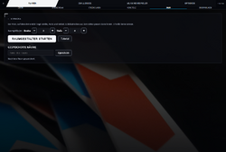

OmegaSim Wiki – die Idee dazu stammt von Gnen54. Hier stehen die offenen Artikel von Nutzer Luuke42 unter der Lizenz CC BY-SA 4.0.
Strecken- und Raum-Editor
Stand dieses Artikels: OmegaSim 1.2.9 vom 26.10.2026 · Firmware des Autos: nicht bekannt (OmegaSim liest die Firmware-Version nicht aus)
Dieser Text wurde mithilfe von KI erstellt (Claude) und ist nicht in jedem Punkt von Menschen geprüft. Fehler bitte direkt verbessern oder auf der Diskussionsseite melden, siehe Mitmachen. Die öffentliche Fassung auf luuke42.github.io/omegasim kann älter sein als der hier beschriebene Stand.

Der Strecken- und Raum-Editor ist das Werkzeug im Reiter Strecke von OmegaSim, mit dem sich eine Carrera HYBRID-Bahn aus einzelnen Teilen nachbauen, als kurzer Streckencode weitergeben, als Bild speichern und in einen gezeichneten Raum mit Möbeln einpassen lässt. Dazu gehören der Streckeneditor (Vollbild, Bedienung mit Finger, Maus, Tastatur und Controller), die Zufallsstrecke (der Streckenrandomisator, der aus dem eigenen Teilebestand einen geschlossenen, kreuzungsfreien Rundkurs baut, der in den Raum passt), Meine Teile (der Bestand im Karton), der Raumgestalter (Raster aus 10-cm-Feldern für Boden und Möbel) und die berechnete Ideallinie. Die gebaute Strecke ist das Streckenlayout der ganzen App: Kartendarstellung, Ortung der Autos, Kurvendrosselung der NPCs, Startaufstellung und Safety Car greifen darauf zurück. Teile, Codes und das Lesen der Bahn durch das Auto beschreibt der Artikel Strecke.
Auf einen Blick
| Merkmal | Inhalt |
|---|---|
| Menüpfad | Strecke → Editor → Editor starten (Vollbild); Strecke → Strecke laden (Meine Strecken); Strecke → Meine Teile; Strecke → Raum (Raumgröße, Raumgestalter starten, gespeicherte Räume); im Bahn-Modus auch über Fahren → Strecke → Editor / Laden / Raum |
| Wichtigste Schalter | Editorleiste: Linie (Ideallinie, Standard aus), Tasten (Tastenkürzel, Standard an), Raum (Standard an); Raumgröße Breite × Tiefe in m (Standard 0 × 0 = keine Grenze); Optionen → NPC → Linienmodell (Standard SIMULATOR) |
| Status | Editor, Streckencode, Meine Teile, Zufallsstrecke: stabil. Raum und Raumgestalter: experimentell. SIMULATOR-Linie: WIP |
| Seit Version | Editor im Vollbild mit Auswahl und Drehung 0.8.28; Zufallsstrecke mit Rückgrat-Verfahren 0.9.13; Raumgestalter 0.9.39; eigenes Raum-Menü 0.9.45; SIMULATOR-Linie 1.0.14 (Standard seit 1.0.15); Streckenbild 1.0.15 |
| Quelldateien | src/60-track.js (Editor, Zufallsstrecke, Meine Teile, Raumgröße, Ideallinienmodelle, Zeichnung), src/60b-raum.js (Raumgestalter, raumEinpassen()), src/60c-streckenbild.js (PNG-Export), src/61-simlinie.js (SIMULATOR-Linie), src/51b-tutorial.js (Tutorials), src/72-challenges.js (chFlaeche())
|
Grundlagen
Ein grafischer Streckeneditor beruht auf wenigen Ideen, die hier ohne Vorwissen erklärt sind. Fachbegriffe stehen auch im Glossar; wie die App insgesamt aufgebaut ist (JavaScript, eine HTML-Datei, Build-Schritt), beschreibt Aufbau von OmegaSim.
Kacheln und Turtle-Grafik
Die Strecke ist keine Zeichnung, sondern eine Liste von Teilen („Kacheln“), z. B. Start, Rechtskurve, Rechtskurve, Gerade. Die Form entsteht erst beim Zeichnen nach dem Prinzip der Turtle-Grafik: Eine gedachte Schildkröte startet im Ursprung mit Blick nach oben. Für eine Gerade läuft sie 43 cm geradeaus, für eine Rechtskurve läuft sie einen Kreisbogen mit 37 cm Radius und dreht sich dabei um 60°. Jedes Teil beginnt exakt dort, wo das vorige endet. Deshalb passen die Teile immer aneinander, und eine Änderung an einem Teil verschiebt alles dahinter. Die Teile haben keine eigene Lage oder Richtung; die Richtung ergibt sich aus der Reihenfolge.
Koordinatensystem und Einheiten
Gezeichnet wird in einem Koordinatensystem mit x nach rechts und y nach unten (so zählen Bildschirme). Die Fahrtrichtung h wird in Grad im Uhrzeigersinn von „oben“ gemessen; ein Schritt der Länge L in Richtung h ändert den Ort um (L · sin h, −L · cos h). Die App rechnet in Zeichnungseinheiten: 40 Einheiten sind eine Kachellänge von 43 cm, also
TRACK_UNITS_PER_CM = 40 / 43 = 0,9302 Einheiten je cm 1 Einheit = 1,075 cm
Raummaße kommen in Metern herein und werden mit 100 × 0,9302 in Einheiten umgerechnet; Prüfungen gegen den Raum laufen dagegen in Zentimetern (Einheiten ÷ 0,9302).
Drehung und Verschiebung als Transformation
Eine Transformation bildet jeden Punkt nach derselben Regel auf einen neuen Punkt ab. Eine Verschiebung addiert einen festen Vektor (tx, ty). Eine Drehung um den Winkel a um den Ursprung ist
x' = x · cos a − y · sin a y' = x · sin a + y · cos a
Der Editor dreht die ganze Strecke in 45°-Schritten, indem er die Startrichtung der Schildkröte ändert (trackRotationDeg); das Einpassen in den Raum benutzt dieselbe Drehung als Formel auf die fertigen Punkte. Beides ergibt dasselbe Bild. Bei 45° sind cos a = sin a = 0,7071.
Zeichnen als SVG
Die Karte ist eine SVG-Grafik (Scalable Vector Graphics): Text, der Linien, Flächen und Pfade beschreibt, statt eines Pixelbildes. Sie bleibt in jeder Zoomstufe scharf. Die Fahrbahn ist ein breiter, fast schwarzer Strich entlang der Mittellinie, die Randsteine sind Streifen in festem Abstand daneben (Breite 9,5 % der Fahrbahn, aus den Karten der Original-App ausgemessen), die Kachelgrenzen weiße Querstriche. Die SVG wird als Zeichenkette gebaut und eingesetzt, ohne das Dokument auszumessen; deshalb kann dieselbe Funktion (renderTrackPreview()) auch in verborgene Reiter und Vorschaubilder zeichnen.
Kollisionsprüfung
Ob eine Strecke sich selbst überlappt oder an ein Möbel stößt, wird geometrisch geprüft:
- Schnitt zweier Strecken (Segmente AB und CD): Man löst A + t · (B − A) = C + u · (D − C). Gibt es eine Lösung mit 0 < t < 1 und 0 < u < 1, kreuzen sich die Segmente.
- Abstand: Zwei Punkte der Mittellinie, die entlang der Strecke weit auseinanderliegen, dürfen sich räumlich nicht zu nahe kommen.
- Freiraumkarte (Distanzkarte): Für jedes Feld eines Rasters wird vorab der Abstand zur nächsten Wand oder Möbelkante berechnet. Dann genügt ein Nachschlagen je Streckenpunkt.
- Bounding Box: das kleinste achsenparallele Rechteck um alle Punkte; ein schneller Vortest, ob etwas überhaupt in ein Rechteck passen kann.
Zufallsgenerator und Startwert
Ein Computer erzeugt „Zufall“ mit einem Pseudozufallsgenerator: einer Rechenvorschrift, die aus einem Startwert (englisch seed) eine Zahlenfolge macht, die zufällig aussieht. Mit demselben Startwert kommt dieselbe Folge heraus, was Ergebnisse wiederholbar macht. OmegaSim benutzt dafür Math.random() des Browsers ohne festen Startwert; jede Zufallsstrecke ist also neu. Wiederholbar wird eine Strecke trotzdem über ihren Streckencode, und damit dieselbe Strecke nicht gleich wiederkommt, merkt sich die App die letzten 12 gebauten Codes.
Suche mit Rückverfolgung
Mehrere Schritte der Zufallsstrecke sind eine Suche mit Rückverfolgung (Backtracking): Man probiert eine Wahl, geht weiter, und wenn es nicht aufgeht, nimmt man die letzte Wahl zurück und probiert die nächste. Eine Schranke (Pruning) bricht einen Zweig früh ab, wenn er das Ziel gar nicht mehr erreichen kann.
Bedienung
Strecke bauen
- Strecke → Editor → Editor starten öffnet den Editor im Vollbild. Verweigert der Browser das echte Vollbild, gilt trotzdem die Vollbild-Anordnung: oben Aktionen, Mitte Karte, unten Teile. Tutorial führt durch die Grundschritte (auch unter Optionen → Tutorials → Streckeneditor).
- Ein Teil aus der unteren Leiste antippen. Es wird hinter dem gewählten Teil eingefügt und danach selbst gewählt; wer nie wählt, baut hinten an. Die Leiste ist wie ein Lenkrad angeordnet: links drehende Teile links, Geraden (Gerade, Engstelle, Boxengasse) in der Mitte, rechts drehende rechts, die Haarnadeln ganz außen; feine Striche trennen die drei Gruppen. Jedes Einfügen klickt (660 Hz, 45 ms).
- Ein Teil auswählen: auf die Karte tippen (es zählt der nächste Abtastpunkt innerhalb von drei halben Bahnbreiten, rund 37,5 cm), oder L1/R1 bzw. Q/E. Das gewählte Teil ist gelb.
- Entfernen nimmt das gewählte Teil heraus. Die erste Start/Ziel-Kachel bleibt („Start/Ziel bleibt“). Weitere Start/Ziel-Kacheln sind erlaubt und gelten als Sektorgrenzen.
- 45° L / 45° R dreht die ganze Strecke. Zurück nimmt die letzte Änderung zurück (bis zu 80 Stände). Leeren setzt auf die Start/Ziel-Kachel zurück (am Controller mit Rückfrage).
- Schließt sich die Runde zum ersten Mal, ertönt ein dreistufiges „Klack“ (520, 780, 1040 Hz). Die Statuszeile zeigt „Geschlossen ✓“ oder „Offen (Lücke cm, Winkel °)“.
- Speichern (oben links, damit man nicht versehentlich „Schließen“ trifft) fragt nach einem Namen und schlägt einen vor. Bild erzeugt ein PNG. Vollbild/Schließen oder Esc/L3 verlässt den Editor; die Strecke bleibt erhalten, auch über einen Neustart.
Zufallsstrecke bauen
- Unter Strecke → Meine Teile den Bestand eintragen (Pakete oder einzeln mit −/+).
- Optional unter Strecke → Raum Breite und Tiefe eintragen und im Raumgestalter Möbel malen.
- Im Editor den Schalter Raum an lassen, wenn der Raum berücksichtigt werden soll; ausgeblendet zählt er für die Zufallsstrecke nicht.
- Zufall drücken. Während der Suche dreht sich ein Streckenteil („Strecke wird gesucht …“), mindestens 450 ms lang. Danach baut sich die Strecke in einer kurzen Animation auf, und der Raum wird passend um sie gelegt.
Raum einrichten
- Strecke → Raum: Breite und Tiefe in Metern eintragen (Komma oder Punkt; −/+ ändern um 0,1 m, gehalten nach 500 ms um 0,5 m). 0 heißt „in dieser Richtung keine Grenze“.
- Raumgestalter starten: Ist keine Größe eingetragen, setzt die App 3,0 × 2,5 m ein. Im Raster Möbel oder Boden malen, mit Pinsel (10, 30 oder 60 cm) oder Rechteck; Vorlagen Rechteck, L, U und Oval.
- Strecke einpassen (Start am Controller) zeigt, ob und wie gedreht die aktuelle Editorstrecke hineinpasst.
- Den Raum unter einem Namen (höchstens 32 Zeichen) speichern; gespeicherte Räume lassen sich mit Vorschaubild laden und mit Rückfrage löschen.
- Im Editor lässt sich die Strecke im Raum mit Finger oder Maus ziehen (ab 6 Pixeln Weg) oder mit dem rechten Stick schieben (bis 60 cm/s); rechten Stick drücken zentriert.
Tastatur, Controller, Touch
| Aktion | Tastatur | Controller | Touch / Maus |
|---|---|---|---|
| Teil in der Leiste wählen | ← / → | Steuerkreuz links/rechts | Antippen (fügt sofort ein) |
| zwischen Aktionsleiste und Teileleiste wechseln | ↑ / ↓ | Steuerkreuz hoch/runter | – |
| einfügen bzw. Aktion auslösen | Enter, Leertaste | ✕ (A) | Antippen |
| gewähltes Teil entfernen | Entf, Rücktaste | □ (X) | Knopf Entfernen |
| rückgängig | Z | ○ (B) | Knopf Zurück |
| um 45° drehen | R (mit Umschalt andersherum) | △ (Y) | Knöpfe 45° L / 45° R |
| voriges / nächstes Teil wählen | Q / E (auch , und .) | L1 / R1 | auf die Karte tippen |
| zoomen | + / −, 0 = zurück | – | Mausrad (Schritt 0,1), Zwei-Finger-Geste |
| Ansicht verschieben (bei Zoom über 1) | – | – | ziehen |
| Strecke im Raum schieben | – | rechter Stick, R3 zentriert | ziehen (bei Zoom 1) |
| Hilfe | H oder ? | – | Knopf Hilfe |
| Editor schließen | Esc | L3 | Knopf Schließen |
Die Controller-Tasten gelten nur, solange der Editor im Vollbild ist; beim Fahren bedeuten dieselben Tasten Gas und Schalten. Bei der Zwei-Finger-Geste ändert sich der Zoom um round((b − a) / 40 · 10) / 10, wobei a und b der Fingerabstand vorher und nachher in Pixeln sind; der Zoom bleibt zwischen 0,5 und 3.
| Aktion | Tastatur | Controller | Touch / Maus |
|---|---|---|---|
| Cursor bewegen | Pfeile (10 cm, mit Umschalt 50 cm) | Stick (bis 120 cm/s, quadratische Kennlinie, Totzone 0,18); Steuerkreuz eine Zelle, gehalten nach 300 ms alle 70 ms | Zeiger |
| malen / Ecke setzen | Leertaste, Enter | ✕ (gehalten malt der Pinsel weiter) | tippen, ziehen |
| Möbel / Boden umschalten | M | □ | Knopf |
| Pinsel / Rechteck umschalten | R | △ | Knopf |
| Pinselgröße | – | L1 / R1 | Knöpfe 10 / 30 / 60 cm |
| rückgängig (bis 40 Schritte) | Strg+Z | Select | Knopf |
| Strecke einpassen | – | Start | Knopf |
| halbes Rechteck abbrechen, sonst schließen | Esc | ○ | Knopf Fertig |
Einstellungen
| Name in der App | Bereich | Standard | Wirkung (aus dem Code) | Schlüssel / ID |
|---|---|---|---|---|
| Linie (Editorleiste) | an / aus | aus (seit 0.9.22) | zeichnet die Ideallinie mit Bremsfarbe in die Karte und ins Streckenbild | track-opt-linie, Speicher omegasim-editor-schalter
|
| Tasten (Editorleiste) | an / aus | an | blendet die Tastenübersicht ein | track-opt-tasten
|
| Raum (Editorleiste) | an / aus | an | zeichnet Raum und Möbel; aus heißt auch: raumEinpassen() meldet sofort „passt, Drehung 0“, die Zufallsstrecke ignoriert den Raum |
track-opt-raum
|
| Zoom | 0,5 bis 3, Schritt 0,1 | 1 | vergrößert die Karte; ab über 1 lässt sie sich verschieben | editorZoom, mit der Strecke gespeichert
|
| Ausrichtung | 0° bis 315°, 45°-Schritte | 0° | Startrichtung der Strecke; Teil des Streckencodes (@) |
trackRotationDeg
|
| Breite / Tiefe (Raum) | 0 bis 99 m, 0,1 m | 0 / 0 | 0 = keine Grenze in dieser Richtung; beide größer 0 schalten den Raumgestalter frei | Speicher omegasim-raum, Felder teile-raum-x, teile-raum-y
|
| Raumform | Raster 10 cm, Boden oder Möbel | alles Boden | Möbelzellen sind für die Strecke gesperrt | Speicher omegasim-raum-form
|
| Gespeicherte Räume | Name bis 32 Zeichen | keine | Größe und Form unter einem Namen | Speicher omegasim-raeume, omegasim-raum-aktiv
|
| Lage des Raums | cm | 0 / 0 | Versatz des Raumrechtecks gegen die Strecke; ändert die Strecke nicht | Speicher omegasim-raum-versatz
|
| Meine Teile | je Sorte 0 bis 9999 | nicht gezählt | Grundlage für Teilebilanz und Zufallsstrecke | Speicher omegasim-teile
|
| NPC: Linienmodell (Optionen → NPC) | Krümmung, Rundenzeit, Late Apex, 3-stufig, Fahrbahnmitte, Innen (gemittelt), Außen-Innen, Luuke-Linie, SIMULATOR | SIMULATOR | bestimmt die Linie, die der Editor zeichnet und die NPCs fahren (beides geht durch buildLine()) |
lineModel, Knöpfe data-linemodel
|
| Gespeicherte Strecken | – | – | Name, Kacheln, Drehung, Zeitstempel | Speicher carrera-hybrid-tracks
|
| Editorstrecke | – | nur Start/Ziel | wird 800 ms nach jeder Änderung gemerkt und beim Start wiederhergestellt | Speicher omegasim-editor-strecke
|
Funktionsweise
Mittellinie, Länge und Platzbedarf
Die Mittellinie (trackCenterline()) ist die eine Geometriequelle für Karte, Ideallinie, Ortung und Einpassen. Die Teilmaße stehen im Artikel Strecke; die wichtigsten Konstanten:
| Konstante | Wert | in Einheiten | Bedeutung |
|---|---|---|---|
TRACK_TILE_CM |
43 cm | 40 (TRACK_STEP) |
Kachellänge |
TRACK_WIDTH_CM |
25 cm | 23,26 | Bahnbreite; halbe Breite TRACK_HALF_W = 11,63
|
TRACK_RADIUS_CM |
37 cm | 34,42 | 60°- und kleine 30°-Kurve |
TRACK_HAIRPIN_RADIUS_CM |
18,5 cm | 17,21 | Haarnadel |
TRACK_HAIRPIN_LEAD_CM |
21,914 cm | 20,39 | gerade Sektion der Haarnadel |
TRACK_R2_CM |
112 cm | 104,19 | weite 30°-Kurve |
TRACK_SAMPLES_PER_TILE |
14 | – | Abtastpunkte je Kachel |
- Länge (
trackLaengeM()): Summe der Weglängen aller Kacheln (tileLength()), in Metern; dazu das 50-Fache in km, weil die Autos im Maßstab 1:50 gebaut sind. - Platzbedarf (
updateTrackSpace()): Bounding Box der beiden Fahrbahnkanten (Mittellinie ± halbe Bahnbreite entlang der Normalen) in der aktuellen Drehung, Anzeige „B × T cm · n Teile“. Das Streckenbild nimmt denselben Wert ohne Drehung (chFlaeche()). - Geschlossen: Lücke ≤ 15 cm und Winkel ≤ 12° (
trackSchluss()); Herleitung unter Strecke.
Die Zufallsstrecke (Streckenrandomisator)
Die Zufallsstrecke (trackZufallMitAnimation() und die Funktionen trackZufall* in src/60-track.js) baut aus dem Bestand unter Meine Teile einen Rundkurs, der sich streng schließt, sich nicht selbst kreuzt, nirgends zu dicht an sich selbst vorbeiführt, nicht langweilig ist und in den Raum passt. Die Idee stammt aus einem Entwurf für Wochenstrecken (mockup/wochenstrecken.html): Man wählt eine Folge von Kurvenläufen (zusammenhängende, gleichsinnige Kurven, die zusammen wie eine Ecke wirken), deren Drehungen sich zu 360° addieren, und löst danach die Längen der Geradenstücke dazwischen so, dass der Ring zusammenkommt.
Die Schließbedingung als Formel
Eine Runde besteht aus der Start-Kachel, n Kurvenläufen und n + 1 Lücken für Geraden (eine nach der Start-Kachel, eine nach jedem Lauf). Kurven verschieben den Endpunkt unabhängig davon, wie viele Geraden dazwischen liegen; jede Gerade verschiebt ihn um einen festen Vektor in der aktuellen Fahrtrichtung. Der Endpunkt ist deshalb linear in den Geradenzahlen:
E = C + Σ k_g · v_g g = 0 … n
g
v_g = 40 · ( sin θ_g , −cos θ_g ) Verschiebung einer Geraden in Lücke g (Einheiten)
θ_g = Fahrtrichtung vor Lücke g (θ_0 = 0°, danach nach jedem Kurvenlauf)
C = Summe der Verschiebungen aller Kurven + v_0 (die Start-Kachel ist selbst eine Gerade)
k_g ∈ {0, 1, 2, 3} Zahl der Geraden-Längen in Lücke g (maxg = 3)
gesucht: |E| ≤ 3 cm · 0,9302 = 2,79 Einheiten
Wahl: kleinstes |E| (auf 0,001 Einheiten gerundet), bei Gleichstand kleinstes Σ k_g
Die Verschiebung einer einzelnen Kurve mit Drehwinkel Δ, Radius R, Startrichtung h und Seite s (+1 rechts, −1 links) ist s · R · (cos h − cos(h + Δ), sin h − sin(h + Δ)); eine Haarnadel hat davor noch ihre gerade Sektion von 20,39 Einheiten (trackZufallSpineInfo()).
Die Lösung sucht trackZufallSolveGaps() ganzzahlig mit Rückverfolgung über alle 4n+1 Kombinationen, mit einer Schranke: Ist der Abstand zum Ziel minus der größtmöglichen restlichen Strecke ((n + 1 − g) · 3 · 40 Einheiten) schon größer als die Toleranz, wird der Zweig abgebrochen. So muss nicht für jeden Kandidaten die teure Mittellinie mit 14 Punkten je Kachel gerechnet werden; die kommt erst bei der Endabnahme.
Ablauf eines Versuchs (Pseudocode)
Vorbereitung (einmal je Knopfdruck):
Bestand leer -> Dialog „Erst die Streckenteile eingeben“, Ende
kein Start/Ziel im Bestand -> „Zufall: Kein Startteil vorhanden“, Ende
Geraden + Engstellen + 2 · Boxengassen < 1 -> „Zufall: Nicht genug Geraden“, Ende
Schritt = 30°, wenn eine weite oder kleine 30°-Kurve im Bestand ist, sonst 60°
Versuch:
1 Richtung dir = +1 (rechts herum) oder −1 (links herum), je 50 %
2 Laufzahl nc = 1 (5 %), 2 (45 %), 3 (25 %), 4 (18 %), 5 (7 %)
3 Drehungen teile dir · 360° auf nc Läufe auf, jeder ein Vielfaches des Schritts
(die ersten nc−1 gleichverteilt aus dem erlaubten Bereich, der letzte = Rest),
mit 50 % danach zufällig gemischt [trackZufallRunTurns]
4 Gegenlauf mit 85 %: füge einen Lauf +m und einen Lauf −m ein, möglichst nicht benachbart;
m = 180°, wenn die Gegen-Haarnadel da ist (dann mit 90 %),
sonst 120° (mit 40 %, wenn ≥ 2 Gegenkurven da sind) oder 60° [trackZufallGegenlauf]
5 Läufe baue jeden Lauf aus gleichsinnigen Teilen des Bestands, höchstens 8 Teile,
Rückverfolgung über die Teilarten; mit 45 % große Teile zuerst (Haarnadel vor
60° vor 30°), sonst 60°-Kurven zuerst [trackZufallRun]
ein Lauf nicht baubar -> Versuch verworfen
6 Schikanen bis zu 3-mal: ein Kurvenpaar mit Netto-Drehung 0 (R+L, L+R, W+Q, Q+W, K+M,
M+K, K+Q, M+W; H+J nur mit 10 %) an zufälliger Stelle einsetzen,
nur wenn die Runde danach noch lösbar ist [trackZufallWiggle]
7 Lücken löse k_g wie oben; keine Lösung -> verworfen [trackZufallSolveGaps]
8 Füllen jede Lücke mit k Längen füllen: erst Boxengassen (2 Längen), dann Engstellen,
dann Geraden; reicht der Bestand nicht -> verworfen [trackZufallFuellGap]
9 Abnahme nicht „SR3GR3“/„SL3GL3“; Endpunkt ≤ 6 cm (Vortest); Mittellinie: Lücke ≤ 3 cm
und Winkel ≤ 12°; kreuzungsfrei und Abstand ≥ 30 cm [trackZufallPasst]
10 Raum passt in einer der 8 Drehungen? nein -> Merker „Raum zu klein“, verworfen
11 Wertung Rest = ungenutzte Teile des Bestands; Wert = Rest + 1,5, falls zwei Haarnadeln
direkt aufeinander folgen; niedriger Wert gewinnt, Gleichstand mit 40 % Wechsel
Geführt werden drei Bestenlisten zu je einem Kandidaten: beste (Code nicht unter den letzten 12 gebauten), beste andere (nur nicht gleich der allerletzten), beste überhaupt. Die Suche endet nach 400 Versuchen oder 3000 ms reiner Rechenzeit und läuft in Häppchen von 40 ms mit Pausen dazwischen, damit die Ladeanimation laufen kann. Ergebnis:
| Lage am Ende | Meldung | Folge |
|---|---|---|
| „beste“ oder „beste andere“ vorhanden | „Zufällige Strecke gebaut“ | Strecke übernehmen, Drehung setzen, Raum darum legen, Code merken, Klack |
| nur „beste überhaupt“ (also eine schon gebaute) | „Zufall: Keine neue Variante möglich“ | nichts ändern |
| keine, aber mindestens einmal „Raum zu klein“ | „Zufall: Raum zu klein für einen Rundkurs“ | nichts ändern |
| keine | „Zufall: Nicht genug Kurventeile für einen Rundkurs“ | nichts ändern |
Ein neuer Bestand unter Meine Teile löscht die Liste der gemerkten Codes, damit die Sperre gegen Wiederholungen die Erzeugung nicht dauerhaft blockiert.
Was aus dem Code folgt (Befunde)
- Links herum ist selten. Für dir = −1 rechnet
trackZufallRunTurns()mit Rest −360°, die Auswahl beginnt aber bei +Schritt; für nc ≥ 2 ist der erlaubte Bereich deshalb leer und der Versuch endet sofort. Linksherum laufende Strecken entstehen nur aus nc = 1, also in 0,5 × 0,05 = 2,5 % der Versuche, und brauchen dann einen Lauf von −360° aus Linksteilen. Mit der Grundpackung (2 Linkskurven) baut der Zufall damit praktisch nur Strecken, die rechts herum laufen. Das ist eine Ableitung aus dem Code, nicht am Gerät beobachtet. - Ein einzelner Lauf schließt nie von selbst. Bei nc = 1 zeigen Start-Kachel und alle Geraden nach oben (θ = 0° und 360°); E = C + Σ k · v hat nur Anteile in derselben Richtung und kann die Start-Kachel nicht ausgleichen. Lösbar wird es erst durch den Gegenlauf aus Schritt 4.
- Die kleinen 30°-Kurven (K/M) sind entgegen einem Kommentar in der Kandidatenliste von
trackZufallRun()enthalten. - Die Lückenlösung kennt den Bestand nicht. Verlangt sie mehr Geraden, als da sind, scheitert der Kandidat erst beim Füllen.
- Die Drehung der Strecke wird vor der Abnahme auf 0 gesetzt; die passende Raumdrehung wird danach als Ausrichtung übernommen.
Abnahme: Kreuzungen und Abstand
trackKreuzungsfrei(pts, 30, 40) prüft die Mittellinie (alle Abtastpunkte, als Ring):
für alle Segmente i, j mit j ≥ i + 2 (außer erstem gegen letztes): kein Schnitt (0 < t < 1, 0 < u < 1)
für alle Punktpaare i < j mit Bogenabstand min(j − i, m − (j − i)) ≥ 40 Punkte:
|p_i − p_j| / 0,9302 ≥ 30 cm
40 Abtastpunkte sind knapp drei gerade Kacheln (14 Punkte je Kachel). Näher beieinander liegende Punkte gehören zum selben Streckenabschnitt und dürfen natürlich nah sein. 30 cm Mittellinienabstand heißt 5 cm Luft zwischen zwei 25 cm breiten Fahrbahnen.
Wie der eingetragene Raum eingeht
Die Raumprüfung macht raumEinpassen(tiles) in src/60b-raum.js; die Zufallsstrecke ruft sie über trackZufallPasstRaum() für jeden Kandidaten. Sie liefert die Drehung (rot), die Verschiebung der Strecke im Raum (t, cm, Ecke oben links = 0,0) und den Versatz des Raumrechtecks für die Zeichnung (versatz), oder „passt nicht“.
Schritt 1, Abkürzungen.
- Schalter „Raum“ im Editor aus → passt, Drehung 0 (seit 0.9.45).
- Breite und Tiefe beide 0 → passt, Drehung 0.
Schritt 2, Umrechnung und Sicherheitsabstand.
W = Breite · 100 cm, H = Tiefe · 100 cm (0 = in dieser Richtung unbegrenzt) R = 25 / 2 + 2 = 14,5 cm halbe Bahnbreite + RAUM_RAND_CM P = Mittellinie bei Drehung 0, in cm (Einheiten / 0,9302)
Schritt 3, acht Drehungen. Die Drehungen werden in der Reihenfolge 0°, 90°, 180°, 270°, 45°, 135°, 225°, 315° probiert, die geraden zuerst; die erste passende gewinnt. Für jede: Q = P gedreht (Formel oben), Bounding Box minX … maxX, minY … maxY, Mitte (mx, my).
Schritt 4a, Raum ohne Möbel (oder nur eine Richtung begrenzt):
passt, wenn (W ≤ 0 oder maxX − minX + 2R ≤ W) und (H ≤ 0 oder maxY − minY + 2R ≤ H) Lage: t = (W/2 − m_x , H/2 − m_y) Strecke mittig, versatz = (0, 0)
Die Mittellinie braucht also an jeder Seite 14,5 cm Luft: in jeder Richtung 29 cm mehr als ihre eigene Ausdehnung.
Schritt 4b, Raum mit Möbeln (beide Maße größer 0 und mindestens eine Möbelzelle):
- Erlaubter Bereich für die Verschiebung: tx von R − minX bis W − R − maxX, ty von R − minY bis H − R − maxY. Ist er leer, ist das Rechteck zu klein.
- Kandidatenlagen im 5-cm-Raster (
RAUM_FIT_CM) über diesen Bereich, sortiert nach dem Abstand zur Mitte des Bereichs: Die erste passende Lage liegt so zentral wie möglich. - Freiraumkarte (
raumFreiKarte()): Für jedes 5-cm-Feld der Abstand zur nächsten Wand oder Möbelkante. Zwei Durchläufe über das Raster (vorwärts und rückwärts, Schachbrett-Gewichte 5 cm gerade und 7,07 cm schräg) ergeben den Abstand zur nächsten Möbelzellen-Mitte; davon gehen 5 cm (halbe 10-cm-Zelle) ab, die Wand wird exakt gerechnet, und vom Ergebnis werden noch 5 · √½ = 3,54 cm abgezogen, damit der Wert für jeden Punkt im Feld sicher ist:
frei(Feld) = min( d_Möbelmitte − 5 cm , Abstand zur Wand ) − 3,54 cm
- Prüfen: erst jeder sechste Punkt (grob), dann alle Punkte; eine Lage passt, wenn für jeden Punkt frei(Punkt + t) ≥ R = 14,5 cm. Punkte außerhalb des Rasters gelten als −1, also belegt.
- Versatz für die Zeichnung: versatz = (−tx − mx + W/2, −ty − my + H/2). Der Editor legt das Raumrechteck mittig auf die Bounding Box der Mittellinie und verschiebt es um diesen Versatz; so liegt es genau so um die Strecke, wie sie hineinpasst.
Schritt 5, keine Drehung passt → „passt nicht“; die Zufallsstrecke verwirft den Kandidaten und merkt sich „Raum zu klein“.
Die Raumform passt sich der Raumgröße an: w = round(Breite · 100 / 10) Zellen, h = round(Tiefe · 100 / 10). Ändert sich die Größe, bleibt die Ecke oben links stehen, und neue Zellen sind Boden. Gespeichert wird das Raster als Lauflängen: abwechselnd Anzahl Boden- und Möbelzellen, Boden zuerst, z. B. „0,9,21,9,…“.
Meine Teile
Der Bestand wird je Teiltyp gezählt (zwölf Sorten, TEILE_SORTEN). Ein nicht eingetragener Typ gilt als „nicht gezählt“ und erscheint nicht in der Bilanz.
| Knopf | Inhalt (TEILE_PAKETE)
|
|---|---|
| + Grundpackung | 8 Rechtskurven, 2 Linkskurven, 4 Geraden, 1 Start/Ziel |
| + Linkskurven-Set | 8 Linkskurven, 2 Rechtskurven, 4 Geraden (bewusst ohne Start/Ziel) |
| + Haarnadel-Set | je 1 Haarnadel links und rechts |
| + 30°-Außenkurven-Set | je 2 weite 30°-Kurven links und rechts |
| + Engstelle | 1 Engstelle |
| Alles auf 0 | alle Sorten auf 0 |
Für jede Sorte rechnet teileBilanz(): vorhanden, gebraucht, Rest = vorhanden − gebraucht. Die Teileleiste zeigt den Rest als kleine Zahl (rot, wenn negativ), die Infozeile „Fehlt: n× Teil“ oder „Alle Teile da“ und die Summe der übrigen Teile. Die Zufallsstrecke wertet denselben Rest: je weniger ungenutzte Teile, desto besser.
Raumgestalter


Der Raum ist das Rechteck „Breite × Tiefe“, geteilt in Zellen von 10 cm (RAUM_ZELLE_CM); jede Zelle ist Boden (0) oder Möbel (1). Ein Raster statt freier Vielecke wurde gewählt, weil es sich mit dem Steuerkreuz genauso bedienen lässt wie mit dem Finger und weil die Einpassung darauf exakt rechnen kann. Alle Eingaben bewegen denselben Cursor.
- Pinsel: füllt ein Quadrat der Kantenlänge max(10 cm, Pinselgröße) um den Cursor; eine Zelle zählt, wenn ihr Mittelpunkt im Quadrat liegt.
- Rechteck: erste Ecke setzen, zweite Ecke setzen (beim Ziehen Anfang und Ende); ein bloßes Antippen (unter 2 cm Weg) füllt nichts.
- Vorlagen (setzen erst alles auf Boden): L sperrt x 55–100 %, y 0–45 %; U sperrt x 36–64 %, y 0–50 %; Oval sperrt jede Zelle außerhalb der Ellipse u² + v² ≤ 1 (u, v = Zellmitte relativ zur Raummitte, geteilt durch die halbe Breite bzw. Tiefe); Rechteck ist alles Boden.
- Die Anzeige nennt Größe und Bodenfläche: Zahl der Bodenzellen × 0,01 m².
- Im Editor erscheinen Möbel als rote Flächen im Raumrechteck; das Raster der Karte hat 50-cm-Linien.
Ideallinie
Die Ideallinie ist eine Rechnung, keine Messung: Kein Byte des Autos meldet die Querlage. Sie wird als seitlicher Versatz αi je Abtastpunkt beschrieben:
Linienpunkt_i = p_i + α_i · n_i n_i = Einheitsnormale nach links (Tangente aus den Nachbarpunkten, um −90° gedreht) |α_i| ≤ Grenze = TRACK_HALF_W − 3 = 11,63 − 3 = 8,63 Einheiten = 9,27 cm
Die Anzeige „Ideallinie nutzt a cm von 9,3 cm möglichem Versatz“ nennt den größten Ausschlag. Achtung Vorzeichen: Positives α ist links; im Lenkbefehl dagegen ist rechts positiv.
Die Modelle
| Modell | Prinzip |
|---|---|
| Krümmung | ohne Layout: Relaxation αi ← clamp(αi + 0,35 · ((p'i−1 + p'i+1)/2 − p'i) · ni), 2000 Durchläufe (idealLine()); mit Layout eine Kurvenform aus Eingang, Scheitel und Ausgang, die die Krümmungsenergie minimiert (formLine())
|
| Rundenzeit | dieselbe Form, minimiert die Modell-Rundenzeit, Scheitel frei (0,15 bis 0,85 des Kurvenwegs) |
| Late Apex | wie Rundenzeit, Scheitel aber erst zwischen 0,55 und 0,85 |
| 3-stufig, Fahrbahnmitte, Innen (gemittelt), Außen-Innen | Vorschriften statt Optimierung |
| Luuke-Linie | Anker je Kachel auf einer Skala −100 … 100, aus Beispielstrecken hergeleitet |
| SIMULATOR (Standard, WIP) | fährt Kandidatenlinien mit der Fahrphysik und behält die schnellste |
Das Rundenzeitmodell
Alle Modelle werden mit derselben quasistationären Rechnung bewertet (lapTimeOf()):
κ_i = 2 · Fläche(p_{i−1}, p_i, p_{i+1}) / (a · b · c) Krümmung aus drei Punkten
v_i = min( v_max , sqrt( a_quer / κ_i ) ) Kurvengrenze
vorwärts: v_{i+1} ≤ sqrt( v_i² + 2 · a_zug · ds_i ) (auf Ringen 2 Durchläufe)
rückwärts: v_i ≤ sqrt( v_{i+1}² + 2 · a_brems · ds_i )
T = Σ ds_i / ((v_i + v_{i+1}) / 2)
vmax, azug und abrems kommen aus der eingestellten Fahrphysik (fahrGrenzen(): Höchsttempo, Bremsverzögerung, Zug aus einem simulierten Start 0 auf den Ankerwert); aquer bleibt eine Annahme im Verhältnis 1,0 : 1,10 zur Bremse, weil kein Byte sie meldet. Die Bremsfarbe der Linie kommt aus dem Anstieg der Krümmung voraus: roh = clamp((κi+6 − κi) / (0,55 · κmax)), gleitend über ±4 Punkte gemittelt, Farbe von Grün (gas) über Gelb nach Rot (bremsen).
Die Luuke-Linie
Jede Kachel bekommt einen Ankerwert (luukeLinieAnker()). In einem Kurvenlauf der Länge len mit Drehsinn d und Grundwert base (100 für 60°-, kleine Kurve, Haarnadel und Engstelle, 50 für die weite Kurve) gilt: erste Kachel −base · d (außen), Scheitelkachel (Index min(1, len − 1)) +base · d (innen), danach volle Innenlage bis zwei Kacheln vor dem Ende, die vorletzte 0,25 · base · d, die letzte −0,5 · base · d. Geraden bekommen Werte aus dem Blick nach vorn und zurück, die Start-Kachel den Mittelwert ihrer Nachbarn. Aus dem Anker wird α = −(Wert / 100) · Grenze; zwischen Kachelmitte und Kachelgrenze wird mit der Glättung 3u² − 2u³ übergeblendet, an jeder Grenze auf den Mittelwert der beiden Nachbaranker. In der Haarnadel geht die Linie bis u = 0,2 von der Mitte nach innen, hält bis 0,8 und kehrt dann zur Mitte zurück.
Die SIMULATOR-Linie
src/61-simlinie.js (seit 1.0.14) sucht die Linie, indem es Kandidaten fährt:
- Saat: die Linien der acht Modelle Luuke, Rundenzeit, Late Apex, Krümmung, 3-stufig, Außen-Innen, Innen (gemittelt), Fahrbahnmitte.
- Fahren (
simFahren()): eine stumme Instanz der Fahrphysik mit der eingestellten Konfiguration fährt den Tempoplan auslapTimeOf()mit Gas und Bremse, Zeitschritt 0,02 s, drei Runden. Gewertet wird das Mittel der Runden 2 und 3 (Runde 1 hat den stehenden Start). Unterschreitet der Plan irgendwo die Leseschwelle (0,35 der Höchstgeschwindigkeit), gibt es 0,5 s Strafe je Runde. Die Lenkung ist der Einschlag, den die Krümmung verlangt: δ = atan(Radstand · κ) / 45°, Radstand = Fahrzeugradstand (Vorgabe 2,6 m) im Maßstab 1:50. - Querrate: Ein Kandidat, der die Querlage schneller ändert als die steilste Saatlinie (ohne Saat: die ganze Bahnbreite in 0,35 s), scheidet aus.
- Abwandeln: Aus den besten drei eines Felds von sechs wird ein Elternteil gewählt; je zur Hälfte entsteht eine Beule (erhobener Kosinus über 6, 10 oder 18 Punkte, Höhe ±Grenze · 0,15 bis 0,40) oder eine Sehne (seit 1.0.19: ein Stück von 8 bis 41 Punkten wird durch die gerade Verbindung seiner Enden ersetzt, wenn sie in der Bahn bleibt; so wird z. B. ein Links-Rechts-Wechsel als gerade Diagonale gefahren).
- Ende nach 200 gefahrenen Linien (gemessen etwa 13 ms je Linie, rund 2,5 s im Hintergrund). Während eines Rennens pausiert die Suche. Das Ergebnis wird je Streckencode, Schluss und Fahrgrenzen gespeichert (höchstens 10 Einträge,
omegasim-simlinie).
Bis die Suche fertig ist, gilt die Luuke-Linie, und am Kartenrand dreht sich ein Streckenteil („Ideallinie wird berechnet …“). Die Suche startet 600 ms nach jeder Änderung, auch wenn die Linie ausgeblendet ist. Laut Patchnotes ergab die Sehne auf der Vorgabestrecke 10,7 statt 11,5 s je Runde in der Physik. Die SIMULATOR-Linie ist ein getestetes Beispiel, keine bewiesene Bestlinie.
Die Engstelle
Über allen Modellen schreibt die Engstelle ihre eigene Linie: bis 30 % der Kachel ganz rechts, ab 70 % ganz links, dazwischen linear: α = Grenze · (2f − 1), f = clamp((u − 0,30) / 0,40).
Streckenbild
Der Knopf Bild (src/60c-streckenbild.js, seit 1.0.15) erzeugt ein PNG von 1600 × 1000 Pixeln:
- Dieselbe Karte wie im Editor wird ohne Autos gezeichnet; Ideallinie und Raum folgen den Schaltern Linie und Raum.
- Weil ein als Bild geladenes SVG das Stylesheet der Seite nicht sieht, bekommt jedes Element seine berechneten Stilwerte (28 Eigenschaften, etwa Füllung, Strichbreite, Schrift) als
style-Attribut. - Das SVG wird direkt in Zielgröße gerastert (Fläche 1480 × 670 Pixel ab x = 60, y = 140), auf eine abgerundete Kartenfläche gesetzt und mit Kopf und Fuß versehen: Streckenname (Schrift wird bis zur passenden Breite verkleinert), „OMEGA SIM“, Streckencode, Länge, Platzbedarf, Teilezahl, „Nachbauen und fahren“ und der Link zur Browserfassung.
- Seit 1.1.11 erscheint das Bild groß zum Bildschirmfoto oder langen Drücken, mit Teilen (wo das Gerät es kann), Speichern und Schließen. Im Browser speichert „Speichern“ als Download, in der Android-App über die Sicherungsschnittstelle unter Bilder/OmegaSim (neue APK nötig). Dateiname: „OmegaSim-“ und der Streckencode ohne Sonderzeichen, höchstens 40 Zeichen.
Speichern und Laden
Speichern legt unter dem Namen Kacheln, Drehung, Anlege- und Änderungszeit ab. Der Namensvorschlag kombiniert eines von 36 Anfangswörtern (etwa Silver, Thunder, Apex) mit einer von 15 Endungen (etwa ring, park, speedway), also 540 Möglichkeiten, und probiert bis zu 30-mal, keinen vorhandenen Namen zu treffen. Strecke laden (Meine Strecken) zeigt die Strecken als Kacheln mit Vorschaubild; Antippen lädt mit Klack, das Kreuz löscht nach Rückfrage. Beim Laden stellt die App fehlende Start/Ziel-Kacheln voran und wandert alte Startcodes um (siehe Strecke).
Beispiele
Beispiel 1: Raum 0 × 0 m
Breite und Tiefe sind 0. raumEinpassen() endet in Schritt 1: passt, Drehung 0, Versatz 0. Jede Zufallsstrecke, die die Abnahme besteht, wird genommen, und zwar in der Ausrichtung 0°. Im Editor erscheint kein Raumrechteck.
Beispiel 2: Raum 2,0 × 1,2 m
W = 200 cm, H = 120 cm, R = 14,5 cm. Die Mittellinie darf also höchstens 200 − 29 = 171 cm breit und 120 − 29 = 91 cm tief sein (in irgendeiner der acht Drehungen).
| Strecke | Drehung | Mittellinie B × T | + 2R | passt? |
|---|---|---|---|---|
SR3G2R3G (Oval) |
0° | 74,0 × 160,0 cm | 103,0 × 189,0 | nein (189 > 120) |
| 90° | 160,0 × 74,0 cm | 189,0 × 103,0 | ja → Drehung 90°, Strecke mittig | |
SR3GLR2GR2G2 (Vorgabe) |
0° / 180° | 111,2 × 202,6 | 140,2 × 231,6 | nein |
| 90° / 270° | 202,6 × 111,2 | 231,6 × 140,2 | nein | |
| 45° / 225° | 165,0 × 175,8 | 194,0 × 204,8 | nein | |
| 135° / 315° | 175,8 × 165,0 | 204,8 × 194,0 | nein | |
| Ergebnis | – | – | passt nicht; als Zufallskandidat verworfen („Raum zu klein“) |
Das Oval ist 74 cm breit, weil drei Rechtskurven zusammen einen Halbkreis mit 37 cm Radius bilden (Durchmesser 74 cm), und 160 cm lang (zwei Halbkreisradien 2 × 37 = 74 cm plus 86 cm Geraden: Start/Ziel und G auf der einen, G2 auf der anderen Seite). Der Platzbedarf mit voller Bahnbreite ist 99 × 185 cm, im Raum also 185 × 99 cm, zuzüglich je 2 cm Wandabstand.
Beispiel 3: Raum 3,0 × 2,0 m, erst leer, dann mit Sessel
Strecke: Vorgabe SR3GLR2GR2G2, Mittellinie bei 0° 111,2 × 202,6 cm, Länge 5,25 m.
Ohne Möbel. W = 300, H = 200.
- 0°: 111,2 + 29 = 140,2 ≤ 300, aber 202,6 + 29 = 231,6 > 200 → nein.
- 90°: 231,6 ≤ 300 und 140,2 ≤ 200 → passt. Drehung 90°, Strecke mittig: t = (W/2 − mx, H/2 − my), rechts und links bleiben je (300 − 231,6) / 2 = 34,2 cm Reserve, oben und unten je (200 − 140,2) / 2 = 29,9 cm.
Mit Sessel 90 × 60 cm in der Ecke oben links (Zellen x 0–90 cm, y 0–60 cm als Möbel gemalt). Jetzt gilt Schritt 4b mit der Freiraumkarte.
- 0°: erlaubter Bereich für ty leer (231,6 > 200) → zu klein.
- 90°: erlaubter Bereich tx 137,1 … 205,5 cm (14 Rasterwerte), ty 14,7 … 74,5 cm (12 Rasterwerte) → 168 Lagen. Keine ist frei. Geometrisch käme die Mittellinie in der besten dieser Lagen auf 16,5 cm an den Sessel heran, also mehr als 14,5 cm; die Freiraumkarte zieht aber zur Sicherheit 3,54 cm ab (und rundet über das Raster), und 16,5 − 3,54 ≈ 13,0 cm < 14,5 cm. Die Prüfung ist bewusst konservativ.
- 180°: zu klein.
- 270°: erlaubter Bereich tx 94,5 … 162,9, ty 125,5 … 185,3; Mitte (128,7; 155,4). Die erste Lage nach Abstand zur Mitte ist t = (129,5; 155,5), und sie passt: Der nächste Punkt der Mittellinie (in der ersten Rechtskurve) liegt 21,5 cm vom Sessel entfernt, abzüglich Sicherheitsabzug immer noch über 14,5 cm. Die Linkskurve der Strecke liegt dabei bei y ≈ 82 cm zwischen x ≈ 90 und 129 cm, die Einbuchtung der Strecke also genau neben dem Sessel.
- Ergebnis: Drehung 270°, t = (129,5; 155,5) cm, Versatz des Raumrechtecks (−0,8; −0,1) cm. Die Bounding Box der Strecke samt Abstand reicht im Raum von x = 35,0 bis 266,6 cm und y = 30,0 bis 170,2 cm; dass sie den Sesselbereich (bis x = 90, y = 60) überlappt, ist kein Widerspruch, denn geprüft wird jeder einzelne Punkt, nicht das Rechteck.
Liegt dagegen ein 60 cm tiefes Regal an der ganzen oberen Wand (x 0–300, y 0–60), passt die Strecke in keiner Drehung: Bei 90° und 270° sind je 168 Lagen belegt, bei 45° bis 315° je 40 Lagen.
Beispiel 4: nur eine Richtung begrenzt
Breite 0, Tiefe 1,5 m. Die Raumform wird nicht geladen (nur bei beiden Maßen größer 0), es gilt Schritt 4a mit W ≤ 0 („unbegrenzt“). Für die Vorgabestrecke: 0° braucht 231,6 cm Tiefe > 150 → nein; 90° braucht 140,2 ≤ 150 → passt, Drehung 90°. Das Raumrechteck im Editor nimmt in der unbegrenzten Richtung die Ausdehnung der Strecke plus je 11,63 + 20 Einheiten an.
Beispiel 5: ein Versuch der Zufallsstrecke mit der Grundpackung
Bestand: Grundpackung (8 R, 2 L, 4 G, 1 S), keine 30°-Teile → Schritt 60°.
- Gewürfelt: dir = +1, nc = 3. Drehungen: erster Lauf aus {60, 120, 180, 240} → 120; zweiter aus {60, 120, 180} → 120; dritter = Rest 120. Gegenlauf übersprungen (15 %).
- Läufe: 120° aus Rechtsteilen → jeweils R, R. Verbraucht: 6 R.
- Ohne Schikane: C = (0; −43 cm), denn drei Läufe zu je 120° bilden ein gleichseitiges Dreieck, dessen Kurven sich gegenseitig aufheben, und die Start-Kachel schiebt 43 cm nach oben. Die Geradenvektoren in cm: v0 = (0; −43), v1 = (37,2; 21,5) bei 120°, v2 = (−37,2; 21,5) bei 240°, v3 = (0; −43) bei 360°. Gesucht Σ k · v = (0; 43): k1 = k2 = 1 ergibt (37,2 − 37,2; 21,5 + 21,5) = (0; 43). Lösung k = (0, 1, 1, 0), |E| = 0, Σ k = 2 →
SR2GR2GR2, Rest = 2 R + 2 L + 2 G = 6 ungenutzte Teile. - Schikane: Übrig sind 2 R und 2 L, also passen R+L oder L+R. Angenommen L+R an Position 2: Läufe RR, RR, LR, RR. Lösung k = (0, 1, 0, 0, 1), |E| = 0,445 Einheiten = 0,48 cm ≤ 2,79 Einheiten → angenommen. Code
SR2GR2LR3G(11 Teile). - Abnahme: Lücke 0,48 cm ≤ 3 cm, Winkel 0°, keine Kreuzung, kein Abstand unter 30 cm; nicht langweilig.
- Wertung: verbraucht 7 R, 1 L, 2 G, 1 S → Rest = 1 + 1 + 2 + 0 = 4, besser als die 6 der Dreiecksstrecke. Länge 4,39 m, Platzbedarf 136 × 185 cm.
Andere Einsetzstellen derselben Schikane ergeben z. B. k = (0, 2, 3, 0, 0) mit 5 Geraden; die gibt der Bestand (4 G) nicht her, und der Kandidat scheitert beim Füllen.
Beispiel 6: das ausgeschlossene Mini-Oval
Mit dir = +1, nc = 2 und den Drehungen 180° + 180° entstehen zwei Läufe R, R, R. C = (0; −43 cm), Lösung k = (0, 1, 0) mit Σ k = 1, also SR3GR3: drei Kurven, eine Gerade, drei Kurven. Diese Strecke (und ihr Spiegelbild SL3GL3) verwirft trackLangweilig() ausdrücklich. Ein Oval entsteht trotzdem, wenn eine Schikane eingesetzt wird oder die Lücken anders gelöst werden müssen.
Grenzen und bekannte Probleme
- Die Zufallsstrecke baut fast nur rechts herum laufende Strecken (siehe Befunde); mit vielen Linkskurven im Bestand bleibt ein großer Teil davon ungenutzt.
- Die Freiraumkarte ist konservativ (bis rund 3,5 cm Sicherheitsabzug plus Rasterfehler). In knappen Räumen kann eine Lage abgelehnt werden, die geometrisch noch passen würde.
- Die Raumprüfung kennt nur acht Drehungen in 45°-Schritten und Verschiebungen im 5-cm-Raster.
- Möbel wirken nur, wenn Breite und Tiefe beide eingetragen sind; mit nur einer Grenze zählt allein das Rechteck.
- Die Raumprüfung läuft nur für Zufallsstrecken und „Strecke einpassen“; eine von Hand gebaute Strecke darf über den Raum hinausragen.
- Die Ideallinie ist gerechnet, nicht gemessen; die Querbeschleunigung ist eine Annahme. Die SIMULATOR-Linie ist ein getestetes Beispiel aus höchstens 200 Versuchen.
- Die Breite der Engstelle ist nicht gemessen, die Kurvenradien der 30°-Teile stammen aus Bildern des Original-Editors.
- Der Editor warnt selbst, dass die gemeldeten Hex-Codes noch nicht für alle Teile stimmen (Beispiel Schikane); siehe Strecke.
Versionsgeschichte
| Version | Änderung |
|---|---|
| 0.8.28 | Editor im Vollbild mit Tutorial: Teile auswählen, mittendrin einfügen und entfernen, Rückgängig, 45°-Drehung, Länge in m und 1:50; Meine Teile |
| 0.8.29 | Schalter für Ideallinie und Tastenkürzel; Teile nach Typ getrennt |
| 0.9.6 | Editorstrecke übersteht einen Neustart (mit Drehung und Zoom) |
| 0.9.11 | Raumrechteck auch mit nur einer Grenze, verschiebbar mit Finger, Maus und rechtem Stick |
| 0.9.13 | Zufallsstrecke: Gegenlauf, die beiden Haarnadeln meist getrennt, Schrittweite 60° ohne 30°-Teile; Speichern-Knopf aus Meine Strecken entfernt |
| 0.9.16 | gezoomte Karte verschiebbar |
| 0.9.22 | Ideallinie im Editor standardmäßig aus |
| 0.9.39 | Raumgestalter (experimentell); Zufallsstrecken passen mit voller Bahnbreite plus 2 cm Abstand und um Möbel herum; Raum wird gleich richtig um die Strecke gelegt |
| 0.9.42 | Ladeanimation, Suche in 40-ms-Häppchen |
| 0.9.44 | Startfehler behoben (Raumkonstanten vor ihrem ersten Gebrauch) |
| 0.9.45 | eigenes Menü Raum mit gespeicherten Räumen und Tutorial; Schalter „Raum“ (ausgeblendet zählt nicht für Zufallsstrecken); Ziehen bewegt die Strecke statt des Raums |
| 1.0.14 | SIMULATOR-Linie (WIP) |
| 1.0.15 | SIMULATOR wird Standard; Knopf „Bild“ (Streckenbild) |
| 1.0.17 | Ideallinie wird nach jeder Änderung im Hintergrund berechnet, mit Ladesymbol |
| 1.0.19 | SIMULATOR probiert Sehnen |
| 1.1.3 | Streckenbild: Fahrbahn auf der Kartenfläche, schärfer, lange Codes passen |
| 1.1.11 | Streckenbild wird groß angezeigt, mit Teilen, Speichern, Schließen |
Siehe auch
- Strecke
- NPC-Fahrverhalten
- Safety Car und Reinigungswagen
- Virtuelles Fahren
- Challenges
- Aufbau von OmegaSim
- Glossar
Quellen im Code
src/60-track.js:trackCenterline(),trackSchluss(),renderTrackPreview(),refreshTrackPreview(),addTile(),trackTeilEntfernen(),trackRueckgaengig(),rotateTrack(),trackZoom(),trackEditorPad(),updateTrackSpace(),trackLaengeM(),teileBilanz(),TEILE_PAKETE,teileRaum(),raumAendern(),streckeImRaumSchieben(),trackZufallVorbereiten(),trackZufallVersuch(),trackZufallRunTurns(),trackZufallGegenlauf(),trackZufallRun(),trackZufallWiggle(),trackZufallSpineInfo(),trackZufallSolveGaps(),trackZufallFuellGap(),trackZufallPasst(),trackZufallPasstRaum(),trackKreuzungsfrei(),segKreuz(),trackZufallAbschluss(),idealLine(),lapTimeOf(),fahrGrenzen(),buildLine(),luukeLinieAnker(),luukeLinie(),brakeProfile(),trackSpeichern(),trackNameVorschlag()src/60b-raum.js:raumFormLaden(),raumFormKodieren(),raumFreiKarte(),raumEinpassen(),rdFuellen(),rdVorlage(),rdProbe(),raumPad(),raumSpeichernUnter()src/60c-streckenbild.js:streckenbildErzeugen(),streckenbildStileUebertragen(),streckenbildAblegen()src/61-simlinie.js:simulatorLinie(),simFahren(),simBeule(),simSehne(),simSuche()src/51b-tutorial.js:K_EDITOR,K_RAUMsrc/72-challenges.js:chFlaeche()
Weblinks
- Browserfassung, Android-App und Quellcode: Links auf der Hauptseite